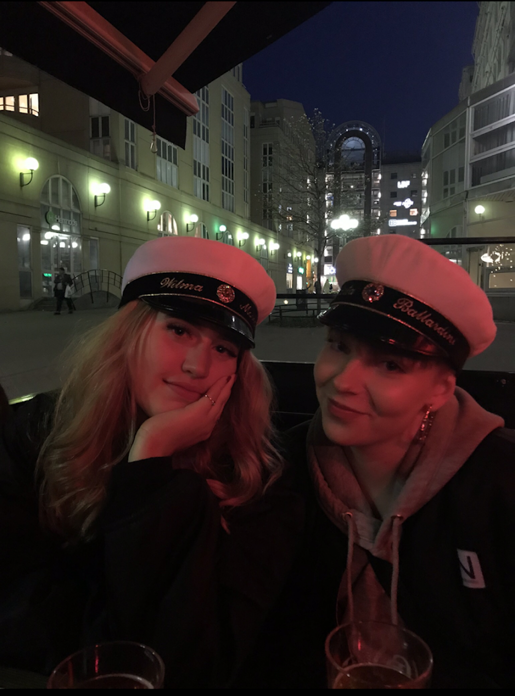
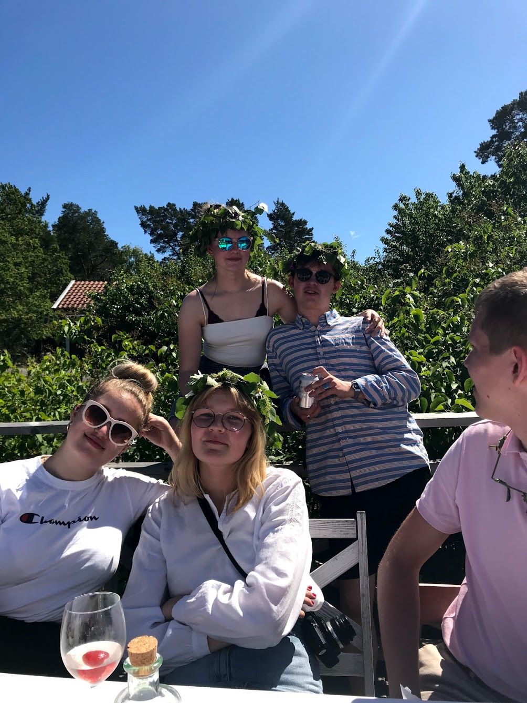
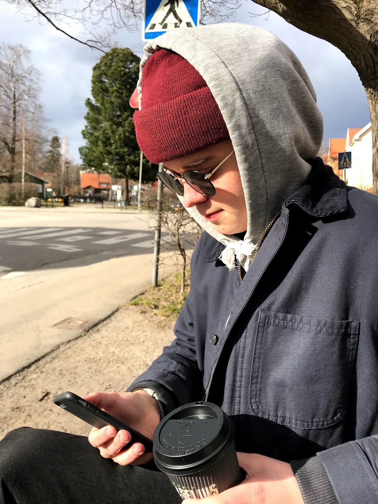
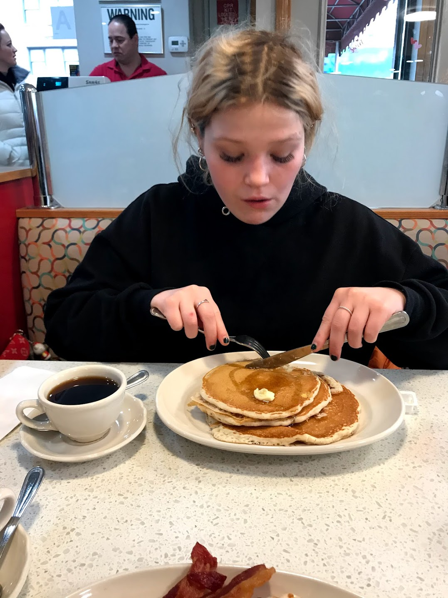

Who am i?
My name is Märta Ballardini, i'm twenty years old and live in Stockholm, Sweden.
I aspire to become a FrontEnd Developer, and i have started the Front End Developer Program at Medieinstitutet.
On my free time i like to hang out with my friends and especially to be with my boyfriend Simon.
I really enjoy doing makeup to entertain my creative side, and i have accumulated a disturbing ammount of makeup as a person that for a long time did not have a full time job.
A pic of me.

My friend Molly.

My friend Wilma.

Some of my friends celebrating midsummer.

My boyfriend Simon.

My friend Miriam.